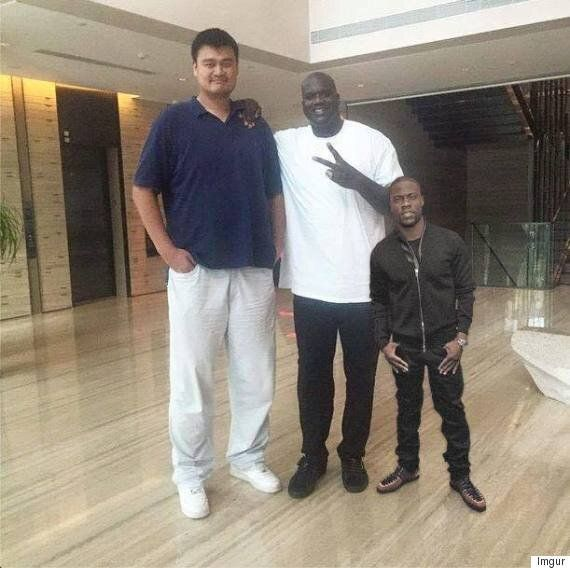
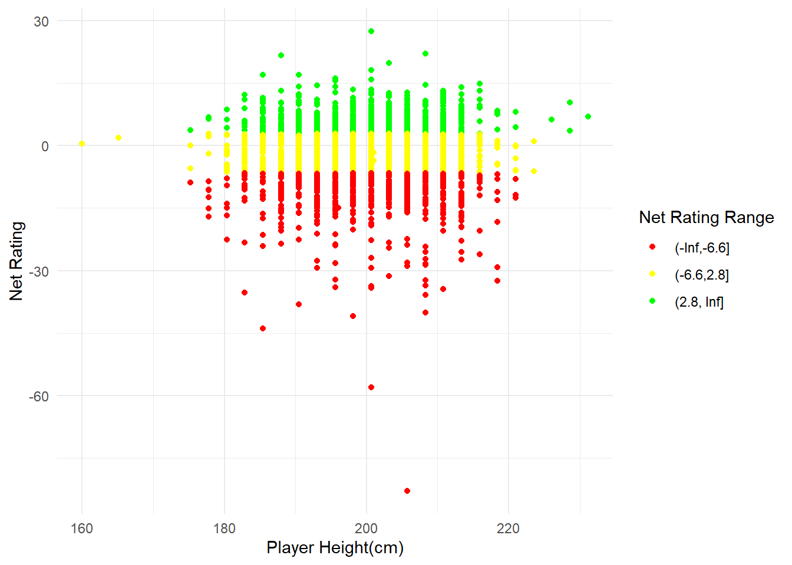

# A tibble: 1 × 8
player_name player_height gp pts reb ast net_rating season
<chr> <dbl> <dbl> <dbl> <dbl> <dbl> <dbl> <chr>
1 Average Player 201. 64 5.6 2.5 1 -1.8 <NA> How much does height really matter in the NBA?
When I think of NBA players, the first image that comes to mind is a hulking giant of a man, the second image that comes to mind is this.

In a sport where the goal is to get the ball into a basket 10 feet off the ground and to prevent the other team from doing the same, naturally, one would come to the conclusion that height is the deciding factor. However, this has proven not be an ironclad rule, time and time again by exceptional individuals such as the 1.6m Muggsy Bogues or the 1.75m Isaiah Thomas(the one who played for the Celtics, not the Pistons point guard he was named after). But then again, just looking at the results of these individuals alone would be invoking survivorship bias. Which begs the question, how do the comparatively shorter players stack up against the “average” NBA player.
Here’s what the “average” NBA player’s stats look like.
Legend: gp=games played through the season(max=82), pts=average number of points scored, reb=average number of rebounds grabbed, ast=average number of assists distributed, net_rating=team’s point differential per 100 possesions while the player is on the court, season=NBA season the data is based on.
I say average, but these numbers are actually the median of their respective columns.
For the purposes of this exploration, we’ll be judging how well a player performs by their “net_rating” score. I initially wanted to judge a player’s performance by the average number of points they scored per game, as one naturally would, in a sport where the goal is to score more points than the opponent. However, Basketball is a team game, with some of the most successful players specialising in defense or grabbing rebounds. Thus I determined that judging based on the “net_rating” score, an indicator of how well the team does while a certain player is on the court, would be a fairer assessment.
Call:
lm(formula = net_rating ~ player_height, data = Full2)
Residuals:
Min 1Q Median 3Q Max
-80.649 -4.351 0.851 5.049 29.650
Coefficients:
Estimate Std. Error t value Pr(>|t|)
(Intercept) -2.2052673 3.8316829 -0.576 0.565
player_height -0.0002235 0.0191028 -0.012 0.991
Residual standard error: 8.089 on 2226 degrees of freedom
Multiple R-squared: 6.147e-08, Adjusted R-squared: -0.0004492
F-statistic: 0.0001368 on 1 and 2226 DF, p-value: 0.9907Here I did a linear regression test, to see if height truly has a significant effect on how well an NBA player performs.
The numbers aren’t exactly easily digestable so here’s the explanantion for the results.
The coefficient for player_height is -0.0002235. This represents the estimated change in net_rating for a one-unit increase in player_height. In this case, the small coefficient suggests a very slight decrease in net_rating for each additional unit of player_height, but the effect is extremely small.
So interestingly, the average performance of a player actually decreases, however slight, the taller the player is!
Hypothesis Test:
The p-value associated with player_height is 0.991, which is much greater than the typical significance level of 0.05. This suggests that there is no statistically significant evidence to reject the null hypothesis.
In other words, there is no strong evidence that player_height has a significant effect on net_rating.
Conclusion: The results suggest that there is no statistically significant evidence to conclude that player_height has a significant effect on net_rating in the given dataset. The effect, if any, appears to be extremely small based on the coefficient magnitude.
Possible explanations: Taller players may be more prone to certain injuries, such as knee and back issues, due to the additional stress on their joints. Taller players may face challenges in terms of speed and agility compared to their shorter counterparts. This could result in difficulties defending against faster players.
Scatter Plot

Above is a scatter plot depicting the various players individual heights and their net rating. The lower and higher interquartile ranges for net rating are -6.6 and 2.8 respectively. The green dots represent players that perform better than 75% of other NBA players. The red dots represent players that perform worse than 75% of other NBA players. The yellow dots represent players that fall in-between.
At a glance, it’s easy to see that there isn’t any particular relation between height and performance, with good and bad players all across the board. In fact, a good chunk of the best performing players happen to be under the median height of 200.66cm
The two yellow dots on the far left, below 170cm most likely represent Muggsy Bogues(160.02cm,0.4) and Earl Boykins(165.1cm,1.9). Now, because net_rating is an indicator of the point differential while a specific player is on the court, you could argue that perhaps the team already had a huge lead before rotating players like Bogues and Boykins onto the court.
# A tibble: 3 × 8
player_name player_height gp pts reb ast net_rating season
<chr> <dbl> <dbl> <dbl> <dbl> <dbl> <dbl> <chr>
1 Earl Boykins 165. 82 12.3 1.7 4.5 1.9 2004-05
2 Muggsy Bogues 160. 80 5.1 1.7 3.7 0.4 1999-00
3 Average Player 201. 64 5.6 2.5 1 -1.8 <NA> But from this simple table comparison, we can see that Earl and Muggsy were both stellar team players, with more than 3-4 times the regular number of assists distributed by the ‘average’ NBA player, with Earl even scoring more than double the points on average per game.
But still it’s clear that these are the only two players below 170cm in the entire league, one explanation for this is that the recruiters naturally overlook or write off anyone below a certain height. So shorter players have to be truly exceptional to be even offered a chance to play in the league.
Conclusion
Contrary to conventional wisdom, which often associates success in basketball with towering stature, the findings suggest a nuanced relationship between height and performance.
The linear regression analysis, examining the effect of player height on net rating, revealed a minimal and statistically insignificant impact.
The scatter plot visually reinforced the diverse performance levels across players of varying heights. Notably, exceptional players like Muggsy Bogues and Earl Boykins, both significantly below the average NBA height, demonstrated outstanding contributions to their teams, challenging the stereotype that height is a prerequisite for success.
Possible explanations for these results include considerations of injury susceptibility among taller players or challenges in speed and agility. Additionally, the analysis hinted at potential biases in recruitment practices, where shorter players, despite their exceptional skills, may face greater scrutiny or be overlooked in favor of taller prospects.
In conclusion, while height may play a role in certain aspects of the game, the evidence presented suggests that it does not serve as a decisive factor in determining a player’s overall impact, particularly when assessed through the lens of net rating. Exceptional skills, teamwork, and individual contributions, regardless of height, continue to shape success in the dynamic and multifaceted world of the NBA.
# A tibble: 10 × 8
# Groups: player_name, net_rating [5]
player_name player_height gp pts reb ast net_rating season
<chr> <dbl> <dbl> <dbl> <dbl> <dbl> <dbl> <chr>
1 John Stockton 185. 82 14.4 2.8 10.5 11.4 1996-97
2 John Stockton 185. 82 11.5 2.8 8.7 11.4 2000-01
3 Lindsey Hunter 188. 82 14.2 2.8 1.9 5.1 1996-97
4 Lindsey Hunter 188. 82 10.1 2.1 2.7 5.1 2000-01
5 Mark Blount 213. 82 10.3 7.2 0.9 0.4 2003-04
6 Mark Blount 213. 82 9.4 4.8 1.6 0.4 2004-05
7 Bobby Simmons 198. 75 16.4 5.9 2.7 0.4 2004-05
8 Bobby Simmons 198. 75 13.4 4.4 2.3 0.4 2005-06
9 Johnny Newman 201. 82 8.7 2.3 1.4 0.2 1996-97
10 Johnny Newman 201. 82 10 1.9 0.8 0.2 1999-00This was just a fun observation I found while trying to tidy up my dataset. My original dataset included the statistics of each season an individual player played in. So I tried to filter it down to each player’s best performing season. Quickly scanning through the data, I noticed Bobby Simmons still had two rows in the dataset. So I tried looking for all the other players who had the same net_rating across multiple seasons. So these are essentially, the most consistent players in the league, who had the same net rating across two seasons.
To learn more about Daniel, navigate to the “About” section. GitHub Page link:
https://github.com/IDrinkTapWater/idrinktapwater.github.io